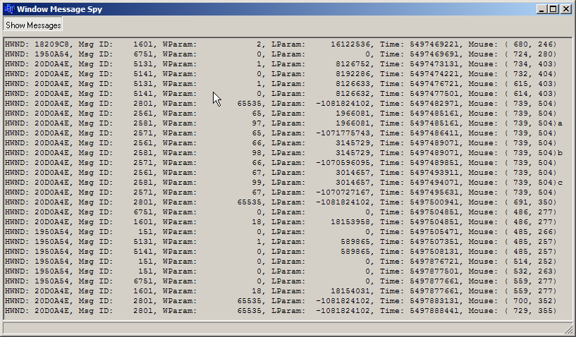
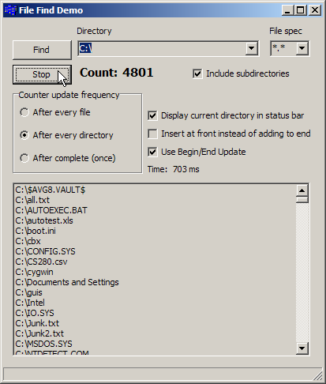
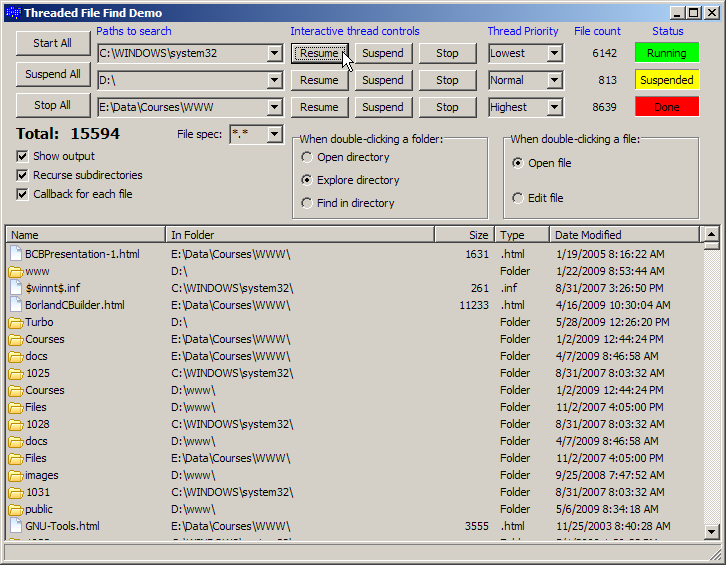
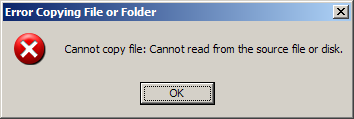

Session #9
I also showed a nifty tool from Microsoft called Spy++. It comes with Visual Studio and you can find it on the Start Menu under:
- WinProcMain.h - The definition of the main form.
- WinProcMain.cpp - The implementation.
- Project files (Turbo C++) (XE 3) - to build it yourself.
It's kind of a niche tool, but when you need to know about Windows messages and stuff, it can be invaluable.Programs | Microsoft Visual Studio 2010 | Visual Studio Tools | Spy++
If you've never "searched" a file system below, you should check out the help for the functions: FindFirst, FindNext, and FindClose. You should be able to figure out how they work from the example code and the online help. These functions are wrappers around _findfirst, _findnext, and _findclose. (Some compilers will accept these latter functions with or without the leading underscores.) Some information on these functions.
|  |
|
I also demonstrated how to launch files from within the application. By double-clicking on an item in the list view, that file will "launch". If it's an executable, it will run, it if it's a text file, it will be opened by the associated text editor, if it's an HTML file, it will be loaded by the default browser, etc. You can choose how to "launch" the file based on the radio buttons.
Finally, I showed how to use the clipboard to put files on it and then paste (copy) them to another folder in Windows. This is how it works when you copy and paste files in Explorer.
|  |
|
Update for the Clipboard: RAD Studio 2010 and later uses Unicode throughout the library. This can cause some problems when migrating from the older Turbo C++ version (which all of these code samples are based). I discovered one such "issue" when using the Windows clipboard. You need to make a slight change in order for the code to work properly.
Change c_str() to t_str() near the end of MainForm.cpp:
to// Copy the filename starting at 'next' in the buffer strcpy(next, Filelist->Strings[i].c_str());
Without this change, you may get weird results when pasting into Windows Explorer:// Copy the filename starting at 'next' in the buffer strcpy(next, Filelist->Strings[i].t_str());
Update for XE 3: I just discovered that the above no longer works in XE 3. You need to cast the String to AnsiString:
// Copy the filename starting at 'next' in the buffer strcpy(next, AnsiString(Filelist->Strings[i]).c_str());